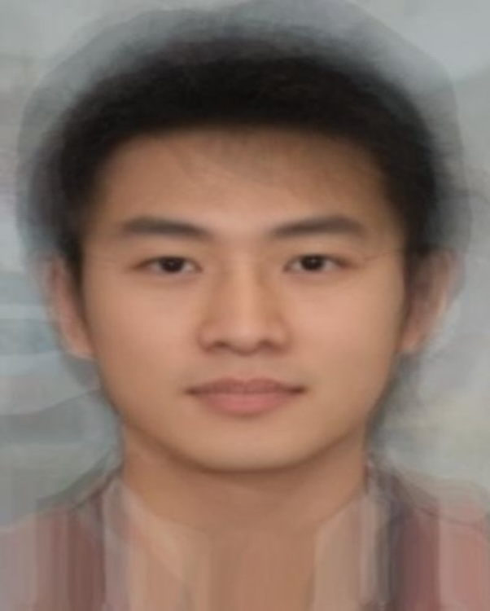
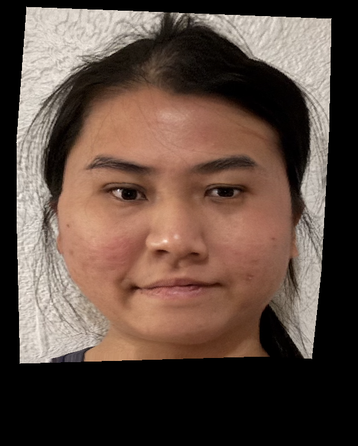
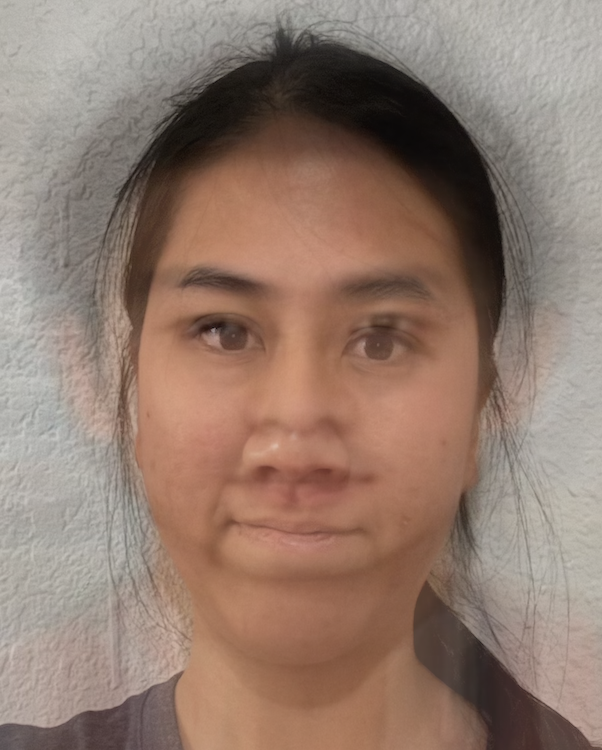
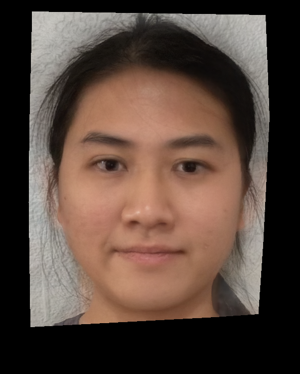

In this part of the process, I define corresponding points on two images of faces to facilitate morphing between them. I manually select pairs of keypoints on both images, ensuring consistent labeling between the two faces for accurate morphing. Using a tool created by a former student, found here, I plot and save these points for future use. I compute a Delaunay triangulation based on the average shape of the two sets of points, creating a well-defined mesh that avoids overly skinny triangles. This triangulation is applied uniformly across the morph.
In Part 2, I compute the "mid-way face" between images of me and Christian Bale. I calculate the average shape by averaging the keypoints from both faces. Then, I warp both faces into this average shape using affine transformations for each triangle in the triangulation. The warped images are combined by averaging the pixel values, resulting in the mid-way face.
I created a morph sequence transitioning between two images using point correspondences and a triangulation structure. The sequence is generated by gradually changing the shape (warp_frac) and blending colors (dissolve_frac) between the two images. Below is a set of images from the morphing sequence, as well as an animated GIF that visually demonstrates the smooth transition from my face to Christian Bale's.
For this part, I used the Danes dataset to compute the average face shape of a population. I selected keypoints across the dataset, morphed each face into the average shape, and then computed the average face. I also warped my face to match the average geometry and warped the average face to match mine.
I created a caricature of my face by extrapolating from the population mean face I computed in the previous step. To do this, I exaggerated the differences between my facial features and the average face. By scaling the difference between my face's keypoints and the population mean, I pushed my facial features further away from the mean, which accentuates my unique characteristics.
In my project, I performed facial morphing to change my appearance by using an average image of a Chinese man as a reference.
Average Chinese Man
Me
Shape Only
Appearance Only
Shape and Appearance
